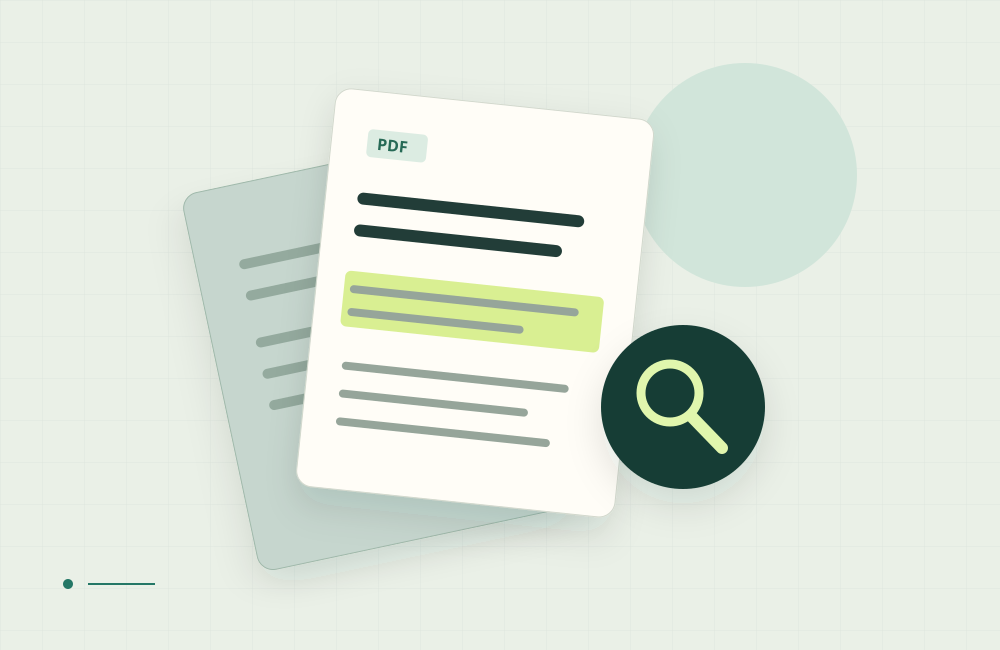

Computer System Technology student.Seeking a junior developer role.
I’m John Smith, studying at Saskatchewan Polytechnic with graduation expected in
2027. My coursework and guided projects cover Python, web development, and introductory AI
applications.
A little space for the person behind the projects.
John SmithLearning. Building. Improving.
2025 — 2027 Always a work in progress.
Python & practical AIEvidence before confidenceClear, usable interfacesRoom to keep learning
01 / ABOUTA little context
From making it work to understanding why.
I’m interested in the space between a promising AI demo and software another
person can understand, test, and use.
Started the Computer System Technology Diploma at Saskatchewan Polytechnic in 2025; expected
graduation in 2027.
Building on Java and Python coursework, SQL, web fundamentals, debugging, and collaborative Git
habits.
Exploring how retrieval, API integration, and small machine-learning workflows become useful
applications.
Looking toward a junior AI or application developer role, with opportunities to learn through
code review and contribute clear, tested work.
Away from the keyboard: recreational badminton, local hikes, and the
occasional coding challenge. I’m especially interested in accessible interfaces and AI that makes
its limits visible.
2025
Programming foundations
2026
Guided AI applications
2026—27
Final-year capstones
2027
Expected graduation
02 / SELECTED WORKThree foundations. Two next steps.
Learning, made visible.
Five AI projects, with the challenge, contribution, decisions, evidence, and
learning kept together. All project details are right here on the page.
05PROJECT STUDIES
i
This is a sample student portfolio. Guided-project outcomes are illustrative; capstones are planned.
Illustrations represent project concepts, and evidence artifacts remain to be created.
From foundations to final-year capstones
Showing all 5 projects.

01 / PROJECT STUDYConcept illustration
Guided projectAUG 2026
MultiPDF Study Assistant
Ask questions across several PDFs and inspect the passages
supporting each answer.
Python
Streamlit
PyPDF2
LangChain
OpenAI embeddings
FAISS
ROLEIndividual student adaptationTIMELINEGuided project, August 2026; sample refinements September 2026.
The challenge
Find explanations across six course-style PDFs without repeatedly opening each
document; distinguish supported answers from fluent guesses.
My contribution
Recreated the tutorial’s extraction, chunking, indexing, retrieval, and
conversational flow. Sample extensions add document/page metadata, a
supporting-passage panel, reset, and empty-file checks.
Decisions & problem-solving
Compared chunk sizes, tested follow-up questions, and identified scanned PDFs as an
extraction limitation. Added a clear unsupported-input message rather than returning
an unreliable answer.
Evidence & what it demonstrates
Own answer-and-source screenshot, retrieval-flow diagram, question-level evaluation
table, and code changes relative to the tutorial. The diagram explains the pipeline;
the evaluation shows whether retrieved passages actually support answers.
Illustrative results
Supported answers improved from 11/15 to 13/15; appropriate responses to out-of-scope
questions improved from 2/5 to 4/5.
Reflection
Became more confident checking evidence and explaining limitations. Next step: better
page-aware chunking and a larger evaluation set.
Illustrative sample outcomes · student extensions and artifacts to be
evidenced.
A conversational interface with coherent history and
understandable recovery when requests fail.
Python
Streamlit
LLM API
session state
pytest
ROLEIndividual student adaptationTIMELINEGuided project, June 2026; sample refinements September 2026.
The challenge
Preserve the conversation when credentials are missing, a request times out, or a
retry occurs.
My contribution
Recreated the API and message-history example. Sample extensions add reset, input
validation, specific error messages, and user-controlled retry.
Decisions & problem-solving
Isolated the API boundary and simulated failures. Diagnosed duplicate messages after
retry by tracing state updates; changed their order and repeated the same checks.
Evidence & what it demonstrates
Captioned recovery demonstration, 12-case interaction checklist, code changes, and
an anonymized feedback/revision log. These demonstrate debugging, communication, and
responsiveness to feedback.
Illustrative results
12/12 interaction checks passed, including four failure paths; retry produced one user
entry and one successful reply. These checks concern interaction behaviour, not answer
accuracy.
Reflection
Learned to approach failed demos calmly and make errors understandable to users. Next
step: separate the UI and service logic more cleanly.
Illustrative sample outcomes · interaction checks do not establish
answer accuracy.
Predict a penguin species from measurements and explain what the
prediction means.
Python
pandas
scikit-learn
RandomForestClassifier
Streamlit
ROLEIndividual student adaptationTIMELINEGuided project, March 2026; sample evaluation refinements October 2026.
The challenge
Establish performance on unseen examples and prevent invalid inputs from producing
convincing-looking results.
My contribution
Recreated the prediction interface. Sample extensions add independent evaluation,
shared preprocessing, input validation, and a model card.
Decisions & problem-solving
Used an illustrative balanced subset of 180 records: 120 training, 30 validation,
and 30 test. Fixed a column-order mismatch by sharing the training/inference schema;
kept the first version single-record.
Evidence & what it demonstrates
Evaluation report, confusion matrix, prediction CSV, own interface screenshot, and
model card. These demonstrate data preparation, analytical thinking, and honest
interpretation.
Illustrative results
28/30 correct predictions (93.3%) and 8/8 validation checks. Two mistakes remained
between Adelie and Chinstrap; the small balanced sample limits broader conclusions.
Reflection
Learned that a polished interface and confident probabilities do not establish model
quality. Next step: broader validation and deeper error analysis.
Illustrative sample outcomes · not an upstream benchmark or real-world
accuracy claim.
Distinguish similar troubleshooting symptoms across documents while integrating a
separate interface, API, retrieval service, and citation view.
Planned contribution
Adapt the text-only sample using 12 self-authored synthetic runbooks about CI
failures, development environments, logs, and release checks. Add a prominent
supporting-evidence view and useful failure messages.
Approach
Establish keyword-search results, compare hybrid retrieval, and manually check
answer support. Use 20 development questions and 40 separate evaluation questions;
record cost and latency. Keep the scope to one small environment and a recorded
public demo.
Evidence & what it demonstrates
Original architecture diagram, question-level comparison report, source-checking
video, cost/latency observations, and student code changes. Together they
demonstrate integration, evaluation, and organized delivery.
Future targets
Supporting documents and supported answers on at least 27/30 answerable questions;
appropriate insufficiency responses on at least 9/10 out-of-corpus questions; working
citation links.
Expected growth
Trace problems across multiple services, manage cloud complexity, and explain when
retrieved evidence is insufficient. This is substantially more demanding than the
single-app PDF tutorial.
Future acceptance targets · this capstone has not been represented as
completed.
Keep preprocessing, training, evaluation, and serving consistent; determine whether
a complex model earns its additional cost.
Planned contribution
Compare a TF-IDF/logistic-regression baseline with one course-supported model
configuration. Adapt the API, add a separate “needs review” flag, and create
lightweight checks and Docker packaging.
Approach
Check duplicates and schemas, reserve holdout data, track experiments, compare macro
F1 and per-class recall, then test the local API. Keep training separate from fast
CI checks; defer Kubernetes deployment.
Evidence & what it demonstrates
Experiment comparison, model card, captioned API demo, passing and deliberately
failing quality checks, and reproducible setup instructions. These show trade-off
reasoning, testing, and ownership of the workflow.
Future targets
Holdout macro F1 ≥ 0.80, recall ≥ 0.70 for every class, and 20/20 API contract checks. No
measured capstone results yet.
Expected growth
Diagnose reproducibility problems and recognize when a simpler model is the better
engineering choice. This extends well beyond a saved classifier behind a small
interface.
Future acceptance targets · source-project metrics are not claimed as
John’s results.